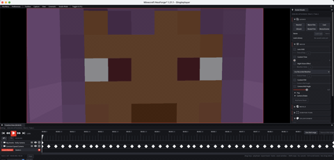

Technical wiki for creators and addon developers.
Timeline and export range
Transport, keyframes, tracks, I/O range, zoom and the segment that gets rendered.
Free downloadAll Rights ReservedNeoForge 1.21.1

01
Core idea
The timeline is the center of replay control. The playhead defines the current tick, tracks hold keyframes and the export range defines what will be rendered.
Use I and O to set the start and end of the export range.
02
Timeline zones
| Zone | Use |
|---|---|
| Transport | Play, pause, jumps and current tick control. |
| Ruler | Time scale and draggable export range. |
| Track list | Track names and grouping. |
| Keyframe canvas | Keyframes, selection, drag and edits. |
| Zoom bar | Expand or compress the visible time range. |
03
Keyframes
- Add keyframes where camera, FOV, actor, audio or visual values must be fixed.
- Default interpolation comes from
Keyframesoptions. - Use Curve Editor when a movement feels mechanical or changes speed too sharply.
04
Export range
- Move the playhead to the first useful frame.
- Press I or set range start.
- Move to the final useful frame.
- Press O or set range end.
- Open Start Export and verify duration, FPS and resolution.